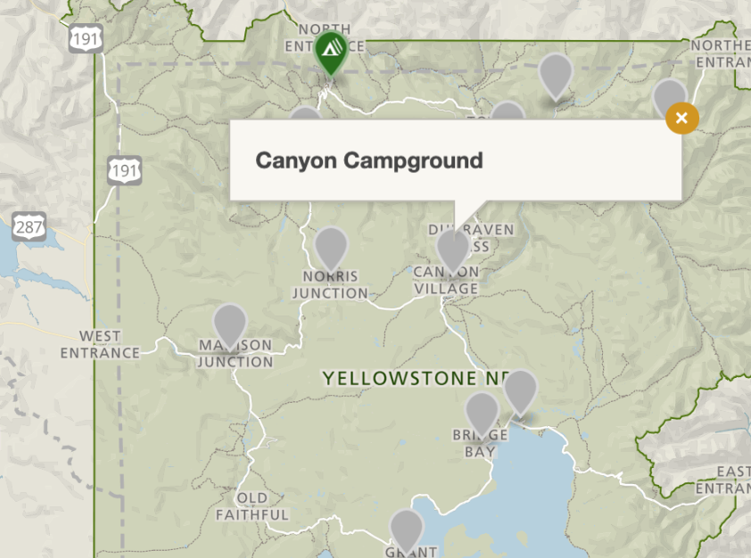

Here are some of camping grounds that I recommend to stay with family and friends
There are links below to visit the camping website at Yellowstone to have more information
Bridge Bay Campground—elevation 7,800 feet (2377 m)—is located near Yellowstone Lake, one of the largest, high-elevation, fresh-water lakes in North America. Campers at Bridge Bay will enjoy spectacular views of the lake and the Absaroka Range rising above the lake's eastern shore.
Reservation: Yellowstone National Park Lodges provides reservations for in this campground. Call 307-344-7311 (307-344-5395 for TDD service) or visit www.yellowstonenationalparklodges.com.
Fees: $27/night
Amenities: Flush toilets, Dump station, Generators allowed
Link to Bridge Bay Campsite
Canyon Campground—elevation 7,900 feet (2408 m)—lies in a lodgepole pine forest at Canyon Village, south of the Washburn range and near the breath-taking Grand Canyon of the Yellowstone River. Canyon Village offers stores, restaurants, and lodging. Nearby hikes include Cascade Lake, Mount Washburn, and the Canyon Rim trails.
Reservation: Yellowstone National Park Lodges provides reservations for in this campground. Call 307-344-7311 (307-344-5395 for TDD service) or visit www.yellowstonenationalparklodges.com.
Fees: $32/night
Amenities: Flush toilets, Dump station, Two showers included each night, Pay showers/laundry onsite, Generators allowed
Link to Canyon Village Campsite